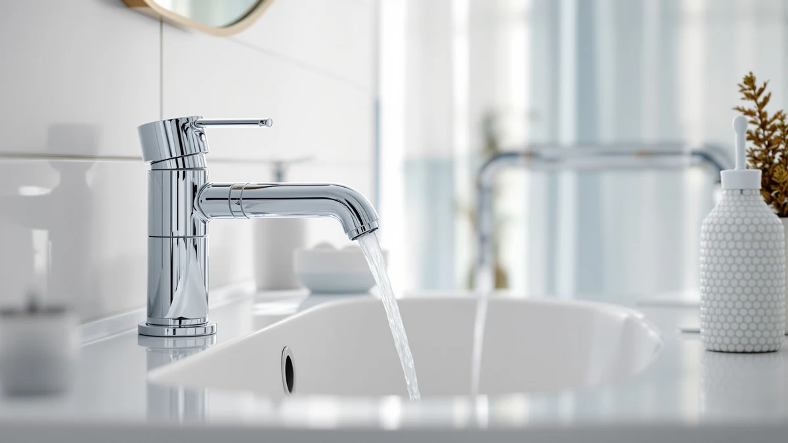

The Best Wall-mounted Sink Faucets (2026)
Prices and picks verified as of August 2026. Independent, reader-supported reviews.


Quick Answer
For most bathrooms, the IUERASD Brushed Gold Bathroom Faucet gives you the cleanest look and easy single-handle control for $55.99. If you want a pull-out spout and a temperature readout, the KaiwayInno Pull Out LED Faucet is the close runner-up at $59.99. Shoppers watching their budget can start with the Fransiton 4-inch faucet at $25.98.
Our pick: IUERASD Brushed Gold Bathroom Faucet — $55.99 Check Price on Amazon
Bottom line: our top pick is the IUERASD Brushed Gold Bathroom Faucet 3 Hole with Pull Out at $55.99. The best budget option is the Skyroku Duck-Tastic Faucet Extender for Toddlers at $14.99.
Things to Know Before You Buy
- True wall-mount vs. deck-mount. A genuine wall-mounted faucet needs plumbing roughed into the wall, so plan for a plumber. Most of the picks here mount on the sink or vanity, which you can install yourself.
- Measure your holes first. Count your faucet holes and measure the spacing. A 4-inch centerset layout is common, and single-hole sinks need a single-hole faucet.
- Match the finish to your hardware. Brushed gold warms a room and hides spots, while brushed nickel blends with most towel bars and drain trim.
- Brass bodies last longer. The best wall-mounted sink faucets and their deck-mount cousins use a brass core that resists corrosion better than lightweight zinc alloys.
- Budget for the extras. Prices here run from $14.99 to $119.03, and you may still need supply lines, a pop-up drain, or adapters.
The best wall-mounted sink faucets free up counter space and make a small vanity look custom, since nothing crowds the basin. That clean, floating look comes with a catch: a real wall-mount setup runs its plumbing inside the wall, so the install is more involved and less forgiving than a standard deck-mount job. For most people shopping this category, the smarter move is a faucet that delivers the same modern look without tearing open drywall.
We looked at seven faucets that cover that spread, from a $14.99 spout extender for kids up to a $119.03 Delta centerset model with brand-backed valves. Our top pick is the IUERASD Brushed Gold Bathroom Faucet at $55.99, which pairs a good look with a durable brass body at a fair price. If you want more spout flexibility, the KaiwayInno Pull Out LED faucet follows close behind.
Each pick below comes with its real tradeoffs, plus a plain-language guide to what separates a true wall-mount install from the deck-mount faucets most bathrooms actually use. You are really after one faucet: the one that fits your sink, your finish, and your budget. This guide is built to help you find it.
Why You Should Trust Us
I am Ilane Tall, and I cover bathroom fixtures for Best Bathroom Faucets. To shortlist the best wall-mounted sink faucets and their deck-mount alternatives, I read the full spec sheets, the mounting requirements, and the verified buyer reviews for every model here. I care most about the parts a listing photo hides: the valve type, the body material, the hole spacing, and how honest the finish looks after a month of daily splashing.
We make money through affiliate links, which you can read about in our disclosure. That does not change which faucets we recommend. When a product has a real drawback, such as a novelty design that will not suit an adult bathroom or a price that outpaces its features, we say so plainly instead of talking around it.
How We Picked
We started with a wide pool of wall-mounted sink faucets and deck-mount faucets that suit the same modern, space-saving bathrooms, then cut it down to seven. Three filters did most of the work. First, body material: we favored brass cores over lightweight zinc because brass holds up to daily water contact. Second, install reality: we flagged which picks need in-wall plumbing and which mount on the sink, so you know the effort before you buy. Third, finish honesty, since a gold or nickel coating that shows every fingerprint is a daily annoyance.
We also kept a real price range in the mix. A guide that only lists $119 faucets ignores the renter who cannot replace the fixture at all, which is why a $14.99 spout extender earned a spot next to the Delta models. Each pick had to make sense for a specific person, not just score well on paper.
How We Compared
We evaluated each of these wall-mounted sink faucets and deck-mount picks against the tasks a faucet faces every day. We checked spout height and reach against a standard vanity to confirm you can fit your hands and a cup under the water. We compared the single-handle and two-handle controls for how precisely you can dial in temperature. We looked at the pull-out and pull-down spouts for whether the hose retracts cleanly instead of sagging over time.
For finish and build, we weighed the brass-body claims against buyer reports of chips, spots, and loosening handles after several months. We do not assign numeric scores or invent a testing lab. Instead, we tell you which faucet fits which sink and which person, and where each one falls short so you can decide with your own bathroom in mind.
Our Picks

IUERASD Brushed Gold Bathroom Faucet
What we like
- Brass body resists corrosion
- Brushed gold hides water spots and fingerprints
- Single-handle control is simple to use
- Balanced price at $55.99
Flaws but not dealbreakers
- Gold will not match chrome or nickel fixtures
- Single handle is less precise than two-handle control
- You may need adapters for older supply lines
| Material | Brass + finish |
| Size | — |
The IUERASD Brushed Gold faucet is our top pick because it does the ordinary things well and looks better than its $55.99 price suggests. The brass body gives it real weight and corrosion resistance, and the brushed gold finish is the practical kind of gold: it warms up the room and shrugs off the fingerprints and water spots that make a polished finish look dirty by lunchtime. Single-handle control keeps everyday use simple, since you nudge one lever for both flow and temperature.
The tradeoffs are honest ones. Gold is a commitment, so if your towel bars, drain, and shower trim are chrome or nickel, this faucet will stand out rather than blend in. A single handle also gives you slightly less precise temperature tuning than a two-handle faucet, which matters more to some people than others. If you want the clean look of the best wall-mounted sink faucets without opening the wall, this deck-mount model is the one we would put on most bathroom sinks first.

Pull Out LED Bathroom Faucet
What we like
- Pull-out hose extends your reach at the sink
- LED shows water temperature at a glance
- Brass body for durability
- Modern look that suits current bathrooms
Flaws but not dealbreakers
- LED depends on water flow and can fade over years
- Costs $4 more than our top pick
- Pull-out hose adds one more part that can wear
| Material | Brass + finish |
| Size | — |
The KaiwayInno Pull Out LED faucet is our runner-up, and it is the pick to grab if you want more than a fixed spout. The pull-out hose lets you draw the water where you need it, which helps for rinsing the basin, filling a tall cup, or washing hair in a small sink. The LED temperature display is the headline feature: it lights up to show how hot the water is running, so you avoid the guesswork of easing the handle back and forth. At $59.99, it sits just above our top pick.
The extras come with small strings attached. The LED runs off the water flow rather than a battery, which is convenient, but that kind of readout can dim or drift after a few years of use. A pull-out spout also means a hose and a docking mechanism, both of which are parts that can loosen or sag over time in a way a plain spout never will. If those features fit your daily routine, this is a strong alternative to the top-rated wall-mounted sink faucets in this guide.

Skyroku Duck-Tastic Faucet Extender for
What we like
- Cheapest pick at $14.99
- Helps children reach the water on their own
- No plumbing or tools needed
- Playful duck design kids enjoy
Flaws but not dealbreakers
- It is an add-on, not a full faucet
- Fits standard spouts only, so check yours first
- The novelty look will not suit an adult bathroom
| Material | Brass + finish |
| Size | — |
The Skyroku Duck-Tastic extender solves a different problem than the other picks, and it does it for $14.99. It clips onto an existing spout and channels the water forward and down, so a small child can reach and wash their hands without leaning across the whole sink. For a rental where you cannot swap the faucet, or a kids' bathroom where a full replacement is overkill, this is the easiest fix on the list. There is no plumbing or tools involved, and nothing to install.
Just know what you are buying. This is an accessory, not one of the wall-mounted sink faucets in the rest of this guide, and it only fits standard spouts, so measure yours before ordering. The duck design that kids love is also the reason it looks out of place in a grown-up bathroom. Used for what it is, a cheap way to make a sink work for little hands, it does the job.

Bathroom Sink Faucet FRANSITON 4
What we like
- Lowest full-faucet price at $25.98
- 4-inch centerset fits common three-hole sinks
- Two-handle control for precise temperature
- Straightforward install
Flaws but not dealbreakers
- Lighter build than the premium brass picks
- Fewer finish options
- No pull-out or pull-down spout
| Material | Brass + finish |
| Size | 4 Inch |
The Fransiton 4-inch centerset faucet is our budget pick, and at $25.98 it is the cheapest way to put a proper working faucet on a standard sink. The 4-inch centerset layout fits the common three-hole configuration you will find on most vanities, and the two-handle design gives you separate hot and cold control, which some people prefer for dialing in temperature exactly. For a landlord turning over a unit or a homeowner who just needs the water to run cleanly, it covers the basics without fuss.
You feel the price in the details. The build is lighter than the brass-heavy IUERASD or Delta models, the finish choices are limited, and there is no pull-out spout to speak of. None of that is a dealbreaker for a secondary bathroom or a rental, where reliability and low cost matter more than a showpiece finish. If you want the look of the best wall-mounted sink faucets someday but need something affordable right now, this is a sensible placeholder.

Ultimate Unicorn Pull Down Bathroom
What we like
- Pull-down spout adds spray flexibility
- Mid-range price at $49.99
- 4-inch centerset fits common sinks
- Brass body construction
Flaws but not dealbreakers
- Novelty branding may not suit every buyer
- Pull-down mechanism adds a maintenance point
- Confirm your hole spacing before buying
| Material | Brass + finish |
| Size | 4 Inch |
The Ultimate Unicorn Pull Down faucet gives you spout flexibility in a compact package for $49.99. The pull-down spray head is the draw here, letting you direct water around the basin for rinsing, and it sits on a 4-inch centerset footprint that fits the same common three-hole sinks as our budget pick. With a brass body underneath, it holds up better than the price alone might suggest, and it slots in as a mid-range option between the Fransiton and the Delta models.
Two things are worth checking before you commit. The pull-down mechanism, like any hose-and-spray setup, is one more part that needs occasional attention over the years compared with a fixed spout. And the playful branding, while harmless, is not for everyone, so judge it on the hardware rather than the name. If your sink calls for a flexible spray and you want to stay near the middle of the wall-mounted sink faucets price range, it is a reasonable pick.

Delta Broadmoor Centerset Brushed Nickel
What we like
- Delta name with warranty support
- Brushed nickel resists water spots
- Standard centerset install
- Replacement parts are easy to find
Flaws but not dealbreakers
- Highest price in this guide at $119.03
- Centerset design, not a true wall-mount
- Brushed nickel reads more traditional than modern
| Material | Brass + finish |
| Size | — |
The Delta Broadmoor is the pick for people who buy on brand trust, and at $119.03 it is the priciest faucet in this guide. What you pay for is the Delta name behind the valve, the warranty support, and the practical reality that Delta parts are stocked at nearly every hardware store, so a worn cartridge years from now is a quick fix rather than a hunt. The brushed nickel finish is a spot-resistant classic that pairs with most existing bathroom hardware.
The honest caveats are the price and the styling. This is a centerset faucet, not one of the true wall-mounted sink faucets, so it will not give you that floating look no matter how nice the finish is. Brushed nickel also leans traditional, which suits many bathrooms but not a starkly modern one. If long-term serviceability and a recognized brand matter more to you than saving $60, the Broadmoor is worth the premium.

Delta Arvo Centerset Brushed Nickel
What we like
- Sleeker Arvo styling than the Broadmoor
- Delta valve reliability
- Brushed nickel finish resists spots
- Strong, resale-friendly brand
Flaws but not dealbreakers
- Premium price at $116.49
- Centerset footprint, not wall-mounted
- Costs about the same as the Broadmoor with fewer trim options
| Material | Brass + finish |
| Size | Pack of 1 |
The Delta Arvo is the Broadmoor's more modern sibling, priced at $116.49. It carries the same Delta valve reliability and brushed nickel finish, but the Arvo lines are cleaner and more contemporary, which makes it the better Delta choice for a bathroom that leans modern rather than traditional. You still get the brand's warranty and the wide parts availability that make a Delta easy to live with over the long haul.
The catch is value overlap. The Arvo costs within a few dollars of the Broadmoor, so you are choosing on looks more than money, and it comes with fewer trim variations to match. It is also a centerset faucet, not a real wall-mount, so treat it as a reliable deck-mount alternative to the best wall-mounted sink faucets rather than the floating look itself. For a modern bathroom that wants Delta backing, it is the one to get.
Quick Comparison
| Product | Material | Price | Rating | Best for | Get it |
|---|---|---|---|---|---|
| IUERASD Brushed Gold Bathroom Faucet | Brass + finish | $55.99 | 4 | Most bathrooms | View on Amazon → |
| Pull Out LED Bathroom Faucet | Brass + finish | $59.99 | 4 | Flexible spout + temp readout | View on Amazon → |
| Skyroku Duck-Tastic Faucet Extender for | Brass + finish | $14.99 | 4 | Kids and rentals | View on Amazon → |
| Bathroom Sink Faucet FRANSITON 4 | Brass + finish | $25.98 | 4 | Tight budgets | View on Amazon → |
| Ultimate Unicorn Pull Down Bathroom | Brass + finish | $49.99 | 4 | Compact pull-down spray | View on Amazon → |
| Delta Broadmoor Centerset Brushed Nickel | Brass + finish | $119.03 | 4 | Known brand + parts | View on Amazon → |
| Delta Arvo Centerset Brushed Nickel | Brass + finish | $116.49 | 4 | Modern Delta look | View on Amazon → |
Are wall-mounted sink faucets hard to install?
A true wall-mounted faucet runs its plumbing inside the wall behind the sink, so you usually want a plumber for that job.
What size faucet fits my sink?
Measure the spacing between your faucet holes first.
The Competition
We left several categories off this list of wall-mounted sink faucets on purpose. True in-wall widespread faucets, the kind that give you the fully floating spout, need plumbing roughed into the wall and usually a licensed plumber, which pushes the total cost well past the picks here and rules them out for most renters and DIY installers. If your walls are already plumbed for one, that is a different project, and we would point you to a professional rather than a listing.
We also passed on touchless and motion-sensor models for this guide. They add batteries or wiring and a sensor that can misread, which is more failure points than most people need on a bathroom sink. The two-handle widespread faucets we considered mostly duplicated what the Delta centerset models already do at a similar price, without the brand parts support, so they did not earn a separate spot.
For the best wall-mounted look at a price and effort most bathrooms can handle, the IUERASD Brushed Gold Bathroom Faucet is the one we would install first, with the KaiwayInno pull-out model close behind if you want a flexible spout.
Frequently Asked Questions
Are wall-mounted sink faucets hard to install?
A true wall-mounted faucet runs its plumbing inside the wall behind the sink, so you usually want a plumber for that job. The deck-mount picks here, like the IUERASD Brushed Gold Faucet or the Fransiton 4-inch model, install on the sink or vanity in about 30 to 60 minutes with a basin wrench and plumber's tape.
What size faucet fits my sink?
Measure the spacing between your faucet holes first. Many bathroom sinks use a 4-inch centerset layout, which the Fransiton and Ultimate Unicorn picks both fit. Single-hole sinks need a single-hole faucet like the IUERASD. Check your hole count and spacing before you buy any of these wall-mounted sink faucets or their deck-mount alternatives.
Gold or brushed nickel: which finish should I pick?
Match the finish to your other hardware. Brushed gold, like the IUERASD pick, warms up a room and hides water spots well. Brushed nickel, like the two Delta models, reads more traditional and blends with most towel bars and drain trim. Pick the finish you already have on your cabinet pulls and shower fixtures so the room stays consistent.